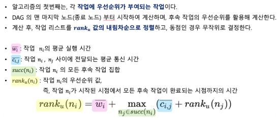
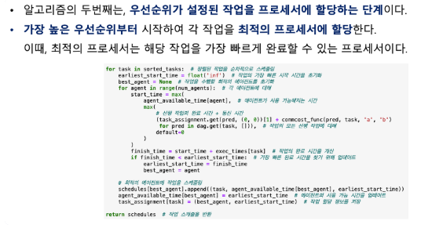
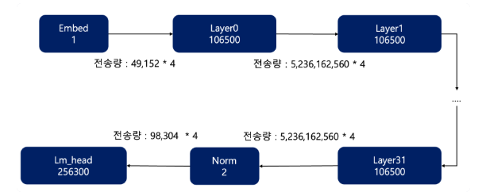
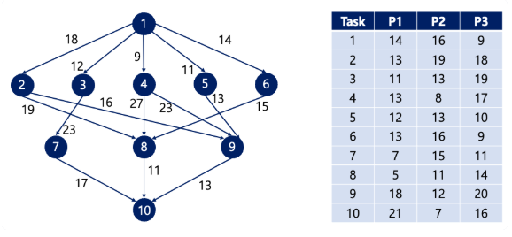
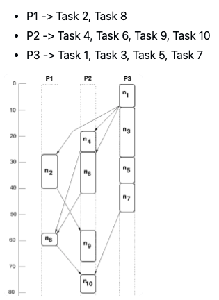
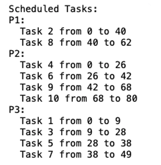

01. Project Overview
본 프로젝트는 성능이 서로 다른 GPU가 함께 사용되는 이기종 GPU 환경에서 대규모 LLM 학습을 더 효율적으로 수행하는 방법을 탐구한 시스템 최적화 프로젝트입니다.
연구실 환경에서는 Ada 6000 1대와 RTX 3090 2대를 동시에 사용할 수 있었지만, 기존 AUTO 레이어 분할 방식이 항상 최적의 학습 시간을 보장하지는 않았습니다. 이에 HEFT 스케줄링 알고리즘을 직접 구현하고, LLM의 레이어 구조를 DAG 형태로 모델링하여 GPU별 레이어 배치 방식을 실험했습니다.
02. Motivation & Goal
Research Motivation
여러 GPU를 동시에 사용하더라도 GPU 성능이 서로 다르고, 레이어 간 통신 비용이 존재한다면 단순히 GPU 개수만 늘린다고 학습이 빨라지지는 않습니다.
특히 LLM 학습은 각 레이어의 연산량이 크고 레이어 간 의존성이 강하기 때문에, 잘못된 레이어 분할은 오히려 병목을 유발할 수 있습니다. 따라서 “이기종 GPU 환경에서 레이어를 어떤 기준으로 배치해야 학습 시간이 최소화되는가?”라는 문제를 해결하고자 했습니다.
Research Goal
- HEFT 스케줄링 알고리즘의 동작 원리 이해
- HEFT 알고리즘을 직접 구현하여 코드 수준에서 검증
- LLM 레이어 구조를 DAG로 모델링하고 연산·통신 비용 수치화
- 실제 다중 GPU 학습 환경에 HEFT 기반 레이어 배치 적용
- AUTO 분할 방식과 HEFT 기반 분할 방식의 학습 시간 비교
03. My Role
HEFT Algorithm Implementation
HEFT 논문을 기반으로 task prioritizing과 processor assignment 과정을 직접 구현했습니다.
LLM Layer DAG Modeling
Llama3-8B-Instruct의 Embed, Layer0~31, Norm, LM Head 구조를 DAG 형태로 모델링했습니다.
GPU Cost Modeling
Ada 6000과 RTX 3090의 연산 성능 차이 및 GPU 간 통신 속도를 반영하여 연산 비용과 통신 비용을 수치화했습니다.
Experiment & Analysis
AUTO 분할 방식과 HEFT 기반 레이어 배치 방식의 실제 학습 시간을 비교하고 결과를 분석했습니다.
04. HEFT Algorithm
HEFT는 Heterogeneous Earliest Finish Time의 약자로, 이기종 컴퓨팅 환경에서 작업 간 의존성과 통신 비용을 고려하여 작업을 프로세서에 배치하는 휴리스틱 스케줄링 알고리즘입니다.
HEFT 알고리즘은 2단계로 나뉜다.
1. Prioritizing tasks : 각 작업에 우선순위가 부여되는 작업한다.

2. Assigning tasks to workers : 설정된 우선순위부터 작업을 최적의 프로세서에 할당한다.

05. GPU Environment
실험은 성능이 서로 다른 Ada 6000 GPU 1대와 RTX 3090 GPU 2대를 사용하는 이기종 GPU 환경을 기준으로 수행했습니다.
| GPU | Model | Single-Precision | Tensor Core |
|---|---|---|---|
| GPU 0 | Ada 6000 | 911.1 TFLOPs | 1457 TFLOPs |
| GPU 1 | RTX 3090 | 35.6 TFLOPs | 285.7 TFLOPs |
| GPU 2 | RTX 3090 | 35.6 TFLOPs | 285.7 TFLOPs |
| From → To | Transfer Speed |
|---|---|
| GPU 0 ↔ GPU 1 | 32 GB/s |
| GPU 0 ↔ GPU 2 | 32 GB/s |
| GPU 1 ↔ GPU 2 | 32 GB/s |
Single-precision 기준으로 연산 성능이 6000이 3090보다 약 2.5배 더 빠르다. Tensor Core 기준으로는 6000이 3090보다 약 5.1배 더 빠르다. GPU 간 또는 GPU-CPU 간 데이터 전송 속도는 32 GB/s이다.
06. Model & DAG Design
본 실험은 Llama3-8B-Instruct 모델에 QLoRA 및 FlashAttention을 적용한 구조를 기반으로 진행했습니다. 전체 모델 구조는 Embed, Layer0~Layer31, Norm, LM Head로 이어지는 순차적 흐름으로 구성되며, 이를 DAG 형태로 모델링했습니다.
Model
Llama3-8B-Instruct 기반 구조를 대상으로 레이어 배치 실험을 수행했습니다.
Task Graph
Embed → Layer0~31 → Norm → LM Head 흐름을 DAG로 구성했습니다.
Execution Cost
GPU별 연산 성능 차이를 반영하여 각 레이어의 실행 비용을 계산했습니다.
Communication Cost
레이어 간 activation 전달 비용을 GPU 간 통신 비용으로 반영했습니다.
| Operation | GPU 0: Ada 6000 | GPU 1: RTX 3090 | GPU 2: RTX 3090 |
|---|---|---|---|
| Embed | 1 | 0.4 | 0.4 |
| Layer 0 | 106500 | 21300 | 21300 |
| Layer 31 | 106500 | 21300 | 21300 |
| Norm | 2 | 0.8 | 0.8 |
| LM Head | 256300 | 102520 | 102520 |

07. Experiment Results
AUTO 레이어 분할 방식과 HEFT 알고리즘을 통해 도출한 레이어 배치 방식을 비교하여 실제 LLM 학습 시간을 측정했습니다.
AUTO 분할 학습 시간
GPU 3개에 자동으로 레이어를 분할한 경우 5시간 29분 30초가 소요되었습니다.
HEFT 적용 학습 시간
HEFT 기반 레이어 배치를 적용한 결과 2시간 49분 22초가 소요되었습니다.
학습 시간 단축
기존 AUTO 분할 대비 약 3시간의 학습 시간 단축을 확인했습니다.
실험 설정
Rank/Alpha 32, Epoch 6, Batch size 5, Quantization 적용 조건에서 비교했습니다.
| Method | Layer Placement | Training Time | Result |
|---|---|---|---|
| AUTO | GPU 0 / GPU 1 / GPU 2 자동 분할 | 5시간 29분 30초 | 기준 성능 |
| HEFT | 성능이 가장 높은 GPU 중심 배치 | 2시간 49분 22초 | 약 3시간 단축 |
08. Code Verification
구현한 HEFT 알고리즘의 정확성을 검증하기 위해, HEFT 논문에 제시된 예제 DAG를 동일하게 적용하여 논문 결과와 코드 출력 결과를 비교했습니다.



9. Source Code
프로젝트 코드 또는 실험 자료는 아래 GitHub 저장소에서 확인할 수 있습니다.
GitHub Repository 보기 →